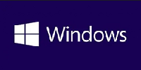

我的笔记
[
调到底部
] [
返回主页
]
打开系统自带的IE浏览器的另类方法
在运行中输入iexplore，即可打开系统自带的IE浏览器。
如何使用命令行打开 Visual Studio 软件?
新建文件夹。
添加环境变量(变量名为PATH，变量值为文件夹路径)。
将visual studio软件的快捷方式拷贝到文件夹中。
WIN+R打开运行命令窗口，输入快捷方式名称，按下回车即可打开软件。
敬请期待...
结束语
一点一滴，持之以恒，方可成就人生。